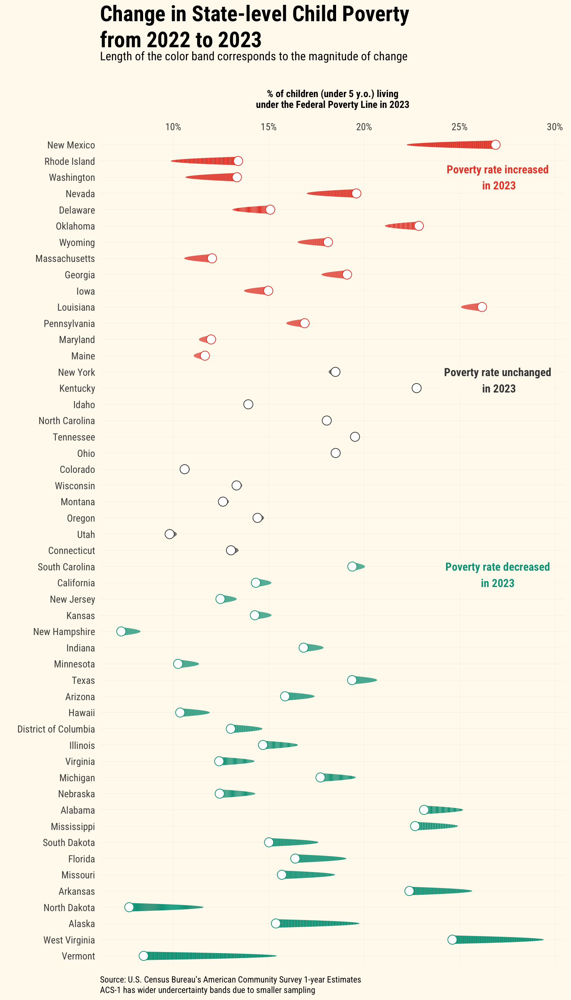
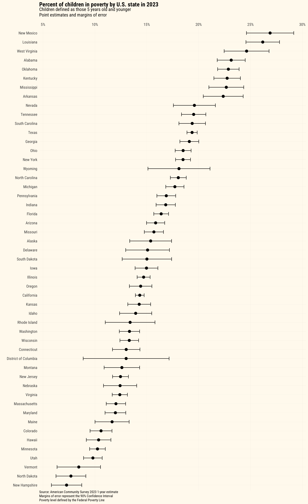
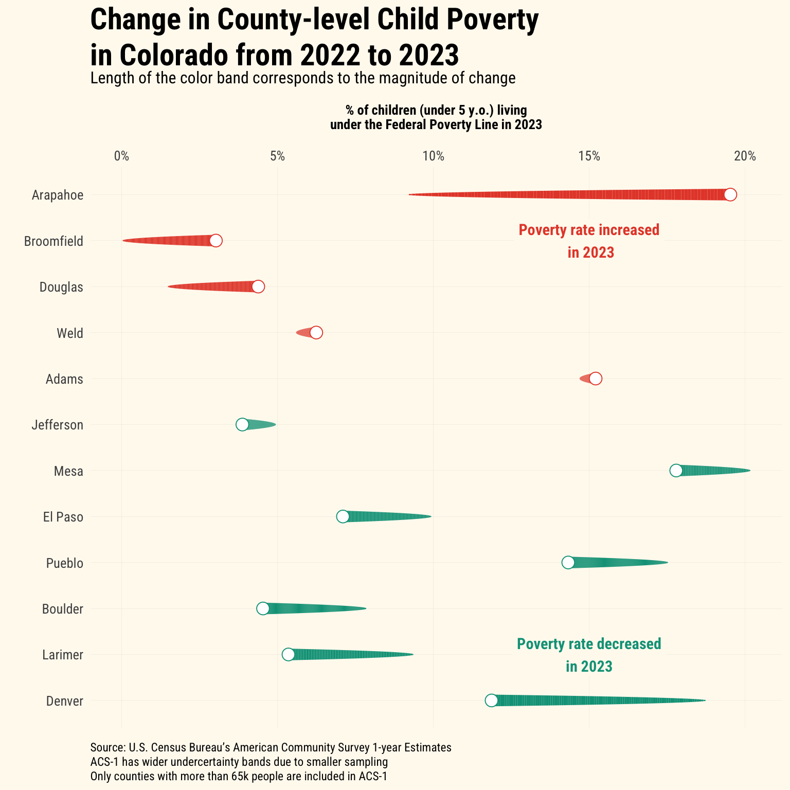
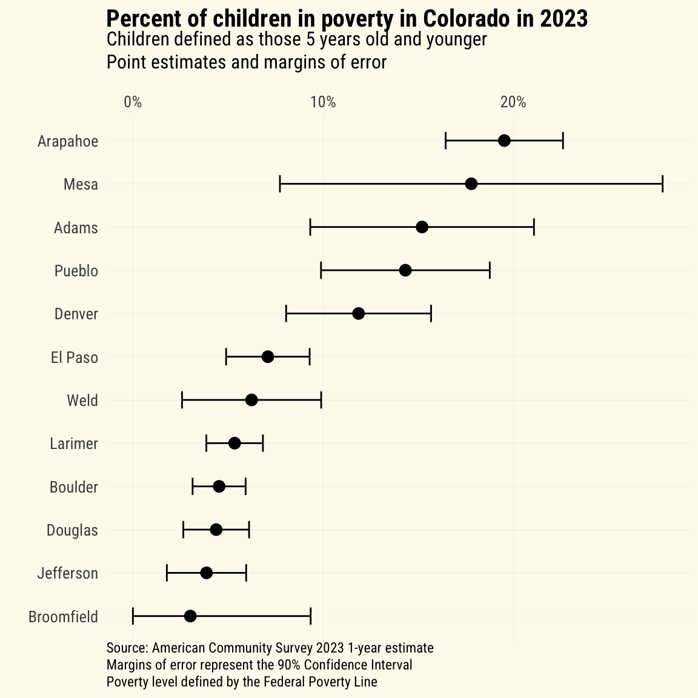

In a previous tidycensus::post, I showed how to fetch data and do some basic, longitudinal analysis of U.S. Census data. Today, the Census Bureau released the 1-year estimates from the American Community Survey (ACS), so I’d like to see how child poverty seems to be changing from the 2022 to 2023 releases.
Loading the scales:: package to transform ggplot scales simply (some people choose to explicitly define scales:: in their code rather than loading the library).
2
The gt:: library provides functionality for creating ggplot-esque tables.
3
The glue:: package allows for simple addition of HTML to ggplot graphics.
4
The ggforce:: package includes a geom_link() function, which I’ll use to create the comet effect in the comet plots that I use.
5
The first time that you’re working with the tidycensus:: package, you need to request an API key at https://api.census.gov/data/key_signup.html. The install= argument will install your personal key to the .Renviron file, and you won’t need to use the census_api_key() function again.
Data
For this analysis, I’m interested in looking at the most recent state-level child poverty data available from the U.S. Census Bureau, and I want to construct a longitudinal sense of the change in child poverty.
First, let’s revisit the different American Community Survey products – ACS-1 and ACS-5.
What’s the difference between these, and how do you choose which survey product to use for your purposes?
Feature
ACS 1-Year Estimates
ACS 5-Year Estimates
Data Collection Period
12 months
60 months
Population Coverage
Areas with 65,000 or more people
All geographic areas, including those with fewer than 65,000 people
Sample Size
Smallest
Largest
Reliability
Less reliable due to smaller sample size
More reliable due to larger sample size
Currency
Most current data
Less current, includes older data
Release Frequency
Annually
Annually
Best Used For
Analyzing large populations, when currency is more important than precision
Analyzing small populations, where precision is more important than currency
Example Usage
Examining recent economic changes
Examining trends in small geographic areas or small population subgroups
For this post, I am interested in constructing a longitudinal dataset of the most recent year-on-year estimates, including the 2023 1-year estimates that were released today. Note that for the ACS-1 products, estimates are only available for geographic units with populations greater than 65,000.
As I did in prior posts, I’ll use the following series from the American Community Survey:
B01001_003: Estimate!!Total:!!Male:!!Under 5 years (all racial groups)
B01001_027: Estimate!!Total:!!Female:!!Under 5 years (all racial groups)
B17001_004: Estimate!!Total:!!Income in the past 12 months below poverty level:!!Male:!!Under 5 years
B17001_018: Estimate!!Total:!!Income in the past 12 months below poverty level:!!Female:!!Under 5 years
Fetching from the tidycensus:: API
years <-c(2022, 2023)
Next, I’ll define a function to fetch the ACS-1 data for 2022 and the new 2023 estimates.
Creating some fields to combine gender-based poverty estimates and calculate a percent of the child population measure
7
Creating state and county fields to manipulate the dataframe and visualize with more simplicity
Then, I’ll use purrr::map_df() to apply each year to the fetch_acs_data() function that I created, which will result in a single dataframe of all years.
According to the 2023 ACS-1, roughly 113,000 fewer children were below the Federal Poverty Line.
Estimated child poverty in the U.S. (2022-2023)
Total and Percent estimates of those living below the Federal Poverty Line
Year
Total children < 5 y.o.
Total children < 5 y.o. living in poverty in last 12 mos.
% of children < 5 y.o. living in poverty in last 12 mos.
2022
18,358,199
3,141,107
17.1%
2023
18,333,697
3,027,969
16.5%
Data from 2022 & 2023 American Community Survey 1-year estimates from the U.S. Census Bureau. Estimates exclude Puerto Rico.
`summarise()` has grouped output by 'year'. You can override using the
`.groups` argument.
Estimated child poverty in the U.S. (2022-2023)
Total and Percent estimates of those living below the Federal Poverty Line
Year
Total children < 5 y.o.
Total children < 5 y.o. living in poverty in last 12 mos.
% of children < 5 y.o. living in poverty in last 12 mos.
Alabama
2022
284,064
71,573
25.2%
2023
288,019
66,642
23.1%
Alaska
2022
46,497
9,199
19.8%
2023
45,211
6,951
15.4%
Arizona
2022
393,413
68,494
17.4%
2023
391,142
62,009
15.9%
Arkansas
2022
177,765
45,650
25.7%
2023
176,908
39,571
22.4%
California
2022
2,118,386
320,754
15.1%
2023
2,086,820
298,927
14.3%
Colorado
2022
305,063
33,128
10.9%
2023
303,775
32,175
10.6%
Connecticut
2022
178,453
23,943
13.4%
2023
180,561
23,506
13.0%
Delaware
2022
54,058
7,072
13.1%
2023
54,398
8,202
15.1%
District of Columbia
2022
39,035
5,729
14.7%
2023
38,512
5,011
13.0%
Florida
2022
1,101,350
210,146
19.1%
2023
1,122,270
183,922
16.4%
Georgia
2022
621,126
110,286
17.8%
2023
621,750
118,763
19.1%
Hawaii
2022
78,927
9,405
11.9%
2023
77,420
8,020
10.4%
Idaho
2022
111,816
15,600
14.0%
2023
110,908
15,449
13.9%
Illinois
2022
674,211
111,480
16.5%
2023
661,026
97,150
14.7%
Indiana
2022
399,031
71,339
17.9%
2023
401,558
67,570
16.8%
Iowa
2022
180,010
24,655
13.7%
2023
182,063
27,260
15.0%
Kansas
2022
176,673
26,764
15.1%
2023
169,830
24,238
14.3%
Kentucky
2022
260,433
58,904
22.6%
2023
264,633
60,196
22.7%
Louisiana
2022
270,937
67,924
25.1%
2023
275,636
72,151
26.2%
Maine
2022
61,018
6,750
11.1%
2023
59,898
6,982
11.7%
Maryland
2022
349,193
39,601
11.3%
2023
346,836
41,543
12.0%
Massachusetts
2022
342,252
36,145
10.6%
2023
342,145
41,153
12.0%
Michigan
2022
536,805
105,043
19.6%
2023
529,459
93,760
17.7%
Minnesota
2022
328,095
37,251
11.4%
2023
326,995
33,516
10.2%
Mississippi
2022
169,303
42,197
24.9%
2023
167,015
37,854
22.7%
Missouri
2022
349,648
64,640
18.5%
2023
348,416
54,655
15.7%
Montana
2022
57,024
7,363
12.9%
2023
55,363
6,976
12.6%
Nebraska
2022
121,107
17,323
14.3%
2023
120,499
14,977
12.4%
Nevada
2022
172,575
29,294
17.0%
2023
171,163
33,530
19.6%
New Hampshire
2022
62,666
5,192
8.3%
2023
62,779
4,565
7.3%
New Jersey
2022
513,333
68,408
13.3%
2023
518,528
64,651
12.5%
New Mexico
2022
104,994
23,304
22.2%
2023
104,293
28,040
26.9%
New York
2022
1,055,455
191,446
18.1%
2023
1,035,708
191,550
18.5%
North Carolina
2022
584,492
105,845
18.1%
2023
594,739
107,284
18.0%
North Dakota
2022
47,844
5,553
11.6%
2023
46,488
3,575
7.7%
Ohio
2022
661,196
123,512
18.7%
2023
654,683
121,143
18.5%
Oklahoma
2022
240,173
50,620
21.1%
2023
239,611
54,783
22.9%
Oregon
2022
199,584
29,443
14.8%
2023
198,150
28,553
14.4%
Pennsylvania
2022
668,734
106,428
15.9%
2023
663,339
111,980
16.9%
Rhode Island
2022
51,955
5,117
9.8%
2023
52,718
7,062
13.4%
South Carolina
2022
281,426
56,398
20.0%
2023
285,830
55,388
19.4%
South Dakota
2022
57,246
10,086
17.6%
2023
54,886
8,240
15.0%
Tennessee
2022
402,215
78,962
19.6%
2023
411,032
80,230
19.5%
Texas
2022
1,881,718
389,244
20.7%
2023
1,913,591
370,590
19.4%
Utah
2022
228,464
23,266
10.2%
2023
229,881
22,545
9.8%
Vermont
2022
27,875
4,312
15.5%
2023
27,168
2,295
8.4%
Virginia
2022
481,682
68,691
14.3%
2023
476,744
59,128
12.4%
Washington
2022
421,722
44,774
10.6%
2023
417,322
55,639
13.3%
West Virginia
2022
87,469
25,753
29.4%
2023
87,453
21,532
24.6%
Wisconsin
2022
309,244
42,078
13.6%
2023
307,874
40,988
13.3%
Wyoming
2022
30,444
5,023
16.5%
2023
30,651
5,549
18.1%
Data from 2022 & 2023 American Community Survey 1-year estimates from the U.S. Census Bureau
To further visualize the state-level changes in estimates, I wanted to try out a comet plot. Comet plots are stylized connected dot plots, which show the “before and after” at both ends of the plot. The comet’s “tail” is the before, and where the estimate moved to is the comet-shaped end. I’ve never used one before, but I think that they’re more than just a fun way to plot data. I think that the movement associated with the comet analogy gives the design some intuition.
I was inspired by this plot, which evaluates NBA player performance using a comet plot. I borrowed heavily from this code and aesthetic.
combined_acs_data %>%filter(year ==2023, NAME !='Puerto Rico') %>%arrange(-perc_diff_YoY) %>%mutate(state =factor(NAME, levels = NAME),direction =case_when( perc_diff_YoY > .005~"Increase", perc_diff_YoY <-.005~"Decrease",TRUE~"No Change")) %>%ggplot(aes(y =reorder(NAME, -perc_diff_YoY),color=direction)) +geom_link(aes(x = perc_u5_poverty_tminus_1, y =fct_reorder(NAME, perc_diff_YoY), xend = perc_u5_poverty, yend =fct_reorder(NAME, perc_diff_YoY), size =after_stat(index))) +geom_point(data = . %>%filter(perc_diff_YoY >0),aes(perc_u5_poverty, y =fct_reorder(NAME, perc_diff_YoY)),shape =21, fill ="white", size =4) +geom_point(data = . %>%filter(perc_diff_YoY <0),aes(perc_u5_poverty, y =fct_reorder(NAME, perc_diff_YoY)),shape =21, fill ="white", size =4) +annotate(geom ='label', x = .27, y =49, label ="Poverty rate increased\n in 2023", family ="Roboto Condensed", color ="#E64B35FF", fontface ='bold', fill ="floralwhite",label.size =0, size =4) +annotate(geom ='label', x = .27, y =36.5, label ="Poverty rate unchanged\n in 2023", family ="Roboto Condensed", color ="#444444", fontface ='bold', fill ="floralwhite",label.size =0, size =4) +annotate(geom ='label', x = .27, y =24.5, label ="Poverty rate decreased\nin 2023", family ="Roboto Condensed", color ="#00A087FF", fontface ='bold', fill ="floralwhite",label.size =0, size =4) +scale_color_manual(values =c("Decrease"="#00A087FF", "Increase"="#E64B35FF", "No Change"="#444444")) +scale_size(range =c(.01, 4)) +labs(title='Change in State-level Child Poverty<br>from 2022 to 2023',subtitle ='Length of the color band corresponds to the magnitude of change<br>', caption="<br>Source: U.S. Census Bureau's American Community Survey 1-year Estimates<br>ACS-1 has wider undercertainty bands due to smaller sampling",x='\n% of children (under 5 y.o.) living\nunder the Federal Poverty Line in 2023\n',y='') +scale_x_continuous(labels = percent, position='top') + my_theme +theme(legend.position ='none',plot.title =element_textbox_simple(size=22))

I chose to sort states based on the percentage point change in child poverty, year-over-year. This results in the states with the largest increase in the child poverty rate on top, and states with the largest decrease in the child poverty rate on the bottom. In New Mexico, the child poverty rate increased 4.7 percentage points from the 2022 to the 2023 estimates from the ACS. In Vermont, the poverty rate decreased 7 percentage points from 2022 to 2023. Although West Virginia saw the second largest decrease in child poverty in these estimates, still about 1 out of every four children in the state are below the poverty line, according to the American Community Survey.
It’s important to remember that all ACS estimates have a margin of error (which by default is a 90% confidence interval), so point estimates should be complemented with their respective error bands. ACS-1 is a smaller sampling than the ACS-5 product, so these margins of error can be more significant. This shows that one of New Mexico, Louisiana, or West Virginia could all have the highest under-five poverty rate as of the 2023 survey.

Using the tidycensus:: margin of error aggregation functions to create confidence bands around the point estimate.
A spotlight on Colorado and county-level poverty estimates
Now I want to look into the movement in child poverty in Colorado counties with the ACS-1 2023 estimates. It’s important to remember that ACS-1 estimates are limited to only geographies that exceed 65,000 people. This limits the Colorado data to only 12 counties; however, these 12 counties constitute 88% of the children under five in the whole state.1
Warning: `stat(index)` was deprecated in ggplot2 3.4.0.
ℹ Please use `after_stat(index)` instead.

These changes should also be taken in the context of the margins of error around point estimates. As shown below, the margins of error for some counties’ estimates is quite large. In Mesa County, the margin of error is +/- 10% around the point estimate (of 17.8%).

Conclusion
In this tidycensus:: post, I demonstrated:
How to fetch data across multiple years from the U.S. Census Bureau and wrangle the data for longitudinal analysis
How to create nice tables using the gt:: package
How to construct a comet plot, thanks to some inspiration from a Substack post
How to evaluate changes in ACS-1 estimates in the context of their margins of error
More to come on poverty analysis in future posts!
Footnotes
This calculation is done using the 2022 ACS-5 estimates to include all 64 counties in Colorado.↩︎